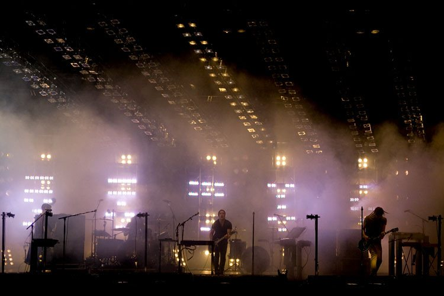

Nine Inch Nails @ Hordern Pavilion, Sydney (24/02/09)
{kind=link}

One of my mates shared an interesting story with me on Tuesday night that illustrates just how much excitement usually revolves around a Nine Inch Nails tour, and the impact that Trent Reznor continues to have on his many fans. Flying home from a work excursion in the Gold Coast over the weekend, she spotted a guy sitting near her wearing a wristband from the Soundwave festival. Asking if he was involved with the tour, he replied no, but he was flying round the country for all the shows. Somewhat puzzled, naturally her next question was “Why?” In response he pulled down his lower lip – revealing a NIN tattoo inside his mouth. He’d already seen them play 12 times, and every time they venture out to Australia he flies around the country to catch every last show on the tour. How’s that for dedication?
Unfortunately, this excitement can sometimes mean that attending their gigs is burdened with the sort of history and expectations that accompanies being obsessed with the band in question for over 15 years. Sadly, this was kinda the case for me and it probably prevented me from enjoying the show to its utmost. Having lived through some life-changing NIN gigs in the past, it was difficult to enjoy Tuesday for what it was – a stripped-back, no-bullshit rock show. Oh, and there was that incident with the power short-out that plunged the Hordern into silence for nearly an hour. No shit.
Kicking off with the piano prologue of The Fragile as the band took their position on the stage, they warmed into The Wretched to get things started in a simmering fashion, nicely subdued and understated. That was until the song reached its guitar-heavy chorus – and we were bombarded with one of the most over the top, epilepsy-inducing lights shows I’ve ever witnessed at a rock gig.
There were panels of strobes strapped across the ceiling above the band, blinding shafts of bright white flanking them on either side, and panels of white lights directly behind them. Next they moved into the harsh, industrial rock sounds of Wish, taken from Reznor’s most heavy and hardcore release Broken back in the dawn of the ‘90s, and it was clear this was all about the rock. Yeah, it was an orgy of light, but the most interesting thing about the spectacle was that as blinding as it was, thematically it still matched perfectly with the stripped-back ‘rock band’ feel of the show.
Nine Inch Nails sound as great as ever. Trent is one hell of a polished frontman, and he’s surrounded himself with a backing band of solid performers, no question. But for me it lacked the mind-numbing impact of the band’s 2007 tour, where a studio-perfect performance was complimented some amazing technology. Who could forget that ridiculous LED visual strip screen that rose and fell behind the band during the show, rendering the exact sort of eerie, sinister visuals we’ve come to associate with the NIN legacy? What about when they cut the guitars and jumped behind their keyboards and laptops to perform several of the screechy electronic pieces from Year Zero, the three remaining members flanked by several towering, wobbly green columns of light behind them on the screen? The ‘Lights in the Sky’ tour that crossed America last year looked even more of a mind-boggling fusion of art and sound, but maybe it was a bit too optimistic to hope we’d get that in Oz.
Regrets aside, it still delivered everything you’d ask of a big show. The heavier, more direct material was shelved for the moment in favour of the deeper, darker numbers like Meet Your Master (showing again how flawlessly everything from Year Zero translates to the stage), and there was a real sense they were building to something. Then things went haywire. The introductory industrial noise of Burn gave way to darkness and silence after a few seconds, with only the sounds of the lonely drummer left to fill the massive venue before he also realised what was going on, and halted too. It was clear the epic lighting rig had proved a little too much for the Hordern’s power supply. Nothing changed for the next 45 minutes (beyond Trent occasionally jumping on a megaphone to try and communicate with the surprisingly tolerant crowd), until finally a techie jumped on the restored mic. “Who’s ready for round 2? The boys wanted me to tell you that it’s not their fault.”
“I don’t know what happened there,” Trent told the crowd. “But we’re not planning on playing for one second shorter than we did before.” The band launched back into it and poured their heart and soul into to the rest of the performance; but they couldn’t quite get the energy levels back where it’d been before the lights went out. That didn’t mean they weren’t gonna reach for the same levels of intensity – if you listen to Survivor on record it’s a glitchy electro/rock spazout number, but on Tuesday night it was stripped back to the barebones, thrashing metal to the core. That shit was heavy. But the crowd’s euphoria only really returned when they whipped out the anthemic Hand That Feeds and Head Like A Hole. Before the band had even reached the end of the song the house lights came on, suggesting that even though we’d been robbed of an encore, by 11.45pm the venue was probably pushing them off stage so they could pack up and go home.
Going on my past encounters with NIN, on Tuesday night I was expecting an artful synthesis of the audio and the visual, something that captured the conceptual complexity of the last few Nine Inch Nails albums and engaged the audience on every level. Instead, what we got a rock show that kicked you right in the nuts. No one’s gonna argue that getting kicked in the nuts isn’t a worthwhile (and memorable) way of spending an evening, but you know Trent’s capable of reaching a little higher.